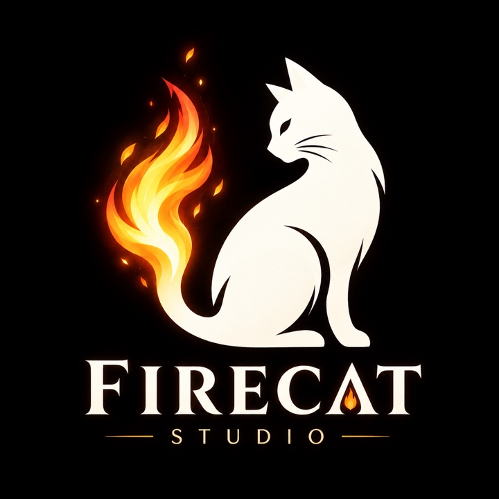

遊戲介紹
墨未乾，勝負未定。
揮毫落墨，搶下宣紙上的每一寸天地！
六種筆法任你調度：濃墨壓陣、潑墨開疆、一道勾牆擋住去路，還能用清水洗去對手的地盤。
看準水流、搶佔勢眼，在墨乾之前，讓整張紙染上你的顏色！
點
墨最濃、範圍最小，蓋得過對手還沒乾的墨
潑
一口氣佔下一大片，但一局只有一次
皴
落下就乾，誰也推不動
勾
留下一道牆，擋住墨與水的去路
染
拉得最長，順著水路能暈得很遠
清水
自己不搶地，卻能把對手已經乾掉的墨洗淡、洗回濕的
每一張紙都不一樣
紙紋的走向、事先濕過的區域、上過礬水而不吃墨的地方、在紙上流動的水流，每局都不同。紙上還藏著三處「勢眼」，佔下的一方能多拿一大筆分數。讀懂這張紙，才下得出好棋。
多種玩法
本機雙人 · 聯機對戰 · 電腦對戰 · 觀戰 · 臨帖 · 試筆
收藏
贏棋與臨帖會解鎖大廳背景、頭像與插圖。插圖可以存到相簿，也能分享給朋友。
支援八種語言
繁體中文、简体中文、English、日本語、한국어、Deutsch、Français、Español。
關於工作室
FireCat Studio｜火焰貓

FireCat Studio
我們是一間獨立遊戲工作室。
希望打磨每一寸細節，帶給玩家最好的體驗；
透過不同的方式，帶你走進不一樣的文化與世界，
也想在忙碌的日子裡，為你留一處放鬆、歇息的角落。
Make a fun game. Make a game fun.
有任何建議、錯誤回報或合作邀約，都歡迎來信：firecat870808@gmail.com